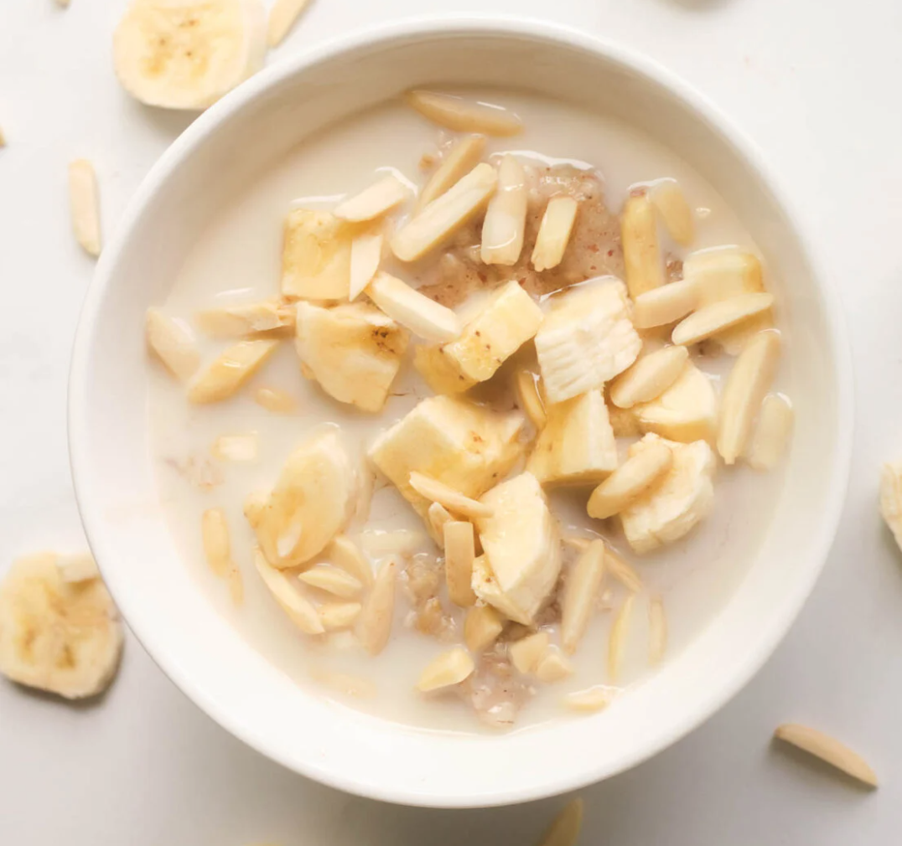

Vegan Banana Porridge

Healthy porridge doesn't take much time
Fast breakfast doesn't always have to be some cold yoghurt.
Make yourself some warm porridge! It's a fast and tasty alternative.
Ingredients
- Rolled Oats
- Water
- Ripe Banana
- Cinnamon
- Ground Flax
- Chopped Almonds (or any nuts you like)
- Plant-based milk
Preparation
- Prepare Oats: In a small saucepan, heat 1 cup of water over high heat. When water comes to a boil, add the oats. Reduce to medium heat, and cook for 5 minutes or until oats thicken.
- Add Banana: Chop half of the banana into small cubes. Reserve the other half for later. Add banana cubes to the saucepan, and stir to combine. Cook for 1-2 minutes until bananas soften.
- Spices: Add the cinnamon, ground flax seeds, maple syrup (optional), and vanilla extract (optional). Stir to combine.
- Stir in Almond Milk: Transfer porridge to a small bowl. Add the almond milk, and stir. Top with the reserved sliced banana, and chopped nuts. Enjoy!
Disclaimer! This page is for getting familiar with basic web design. I did not write this recipe. The original recipe can be found here. All credit goes to Alison Corey, make sure to try their porridge!
Home